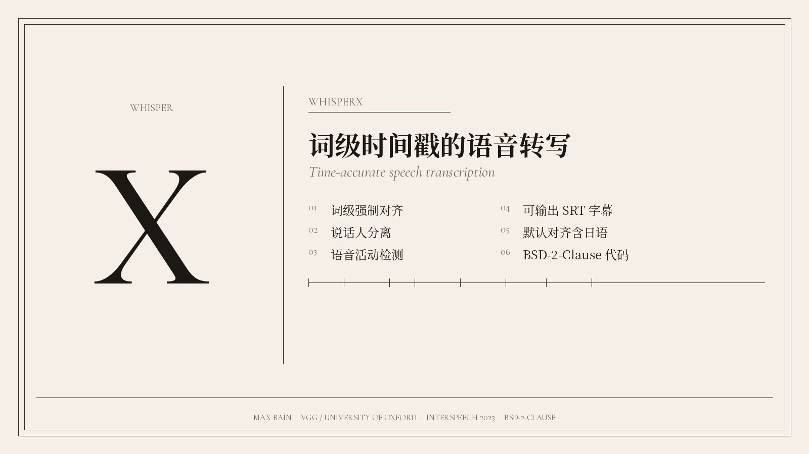

WhisperX 是 Max Bain 等人做的本地语音转写工具。它建立在 OpenAI Whisper 之上：先用语音活动检测把长音频切开，再批量转写，然后用 wav2vec2 把文字对齐到每一个词，还可以选用 pyannote 给不同说话人打上标签。仓库代码以 BSD-2-Clause 发布，版权行写明 Copyright (c) 2024, Max Bain。文中关于「比实时快 70 倍」、挑战赛名次、显存占用和错误率等数字，均为原文自报。

这是什么
WhisperX 把自动语音识别做成一条完整的本地流水线：输入音频，得到带词级时间戳的转写，也可以再标上说话人。命令行工具叫 whisperx，也可以在 Python 里调用。仓库 pyproject.toml 写明版本为 3.8.7rc1，Python 需不低于 3.10、低于 3.14。
作者是 Max Bain，以及 Jaesung Huh、Tengda Han、Andrew Zisserman。工作得到牛津大学视觉几何组（VGG）的支持。论文 WhisperX: Time-Accurate Speech Transcription of Long-Form Audio（arXiv:2303.00747）被 INTERSPEECH 2023 接收。2026 年又有一篇 Context-Aware Interleaved Batching for WhisperX（arXiv:2608.31170），作者是 Carlos Bain 与 Max Bain，讨论如何在批量转写时保留上下文。
它要解决的，是原版 Whisper 的两个常见问题：时间戳通常只给到整句，有时会偏差数秒；以及原生不支持批量推理，长音频往往只能按窗口顺序往下走。仓库还称，这样做可以减少幻觉，并给字幕、说话人标记这类下游任务准备好词级时间轴。速度、显存和评测数字均为原文自报。
它怎么工作
按照 README 和 2023 年论文摘要，流水线大致是这样四步：
- 语音活动检测（VAD）：先判断哪里有人声，把长音频切成片段再合并。论文把这种策略叫做 VAD Cut & Merge，并称它既能改善转写质量，也让批量推理成为可能。
- 批量转写：默认用 faster-whisper 后端，在关闭逐段时间戳的前提下做批量推理。默认不把上一段文本当作下一段的条件（
condition_on_prev_text为 False），以减少幻觉。2026 年新增的--interleaved_context，则是在批量框架里重新传入上下文，项目称这有助于标点和专有名词。 - 强制对齐：用分语言的 wav2vec2 音素模型，把已经得到的文字对齐回音频，从而给出词级（也可以要字符级）时间戳。可选安装 Numba，项目称对齐会再加快。
- 说话人分离（可选）：调用 pyannote-audio，给片段标上说话人 ID。启用时需要 Hugging Face 令牌，并接受所用模型的用户协议。
转写结果可以写成带词级时间的 .srt；加上 --highlight_words True，字幕里会标出每个词的起止。仓库待办事项写明，.ass 字幕输出在 v3 中被移除，尚未恢复。
2023 年论文摘要称，预分段再加上批量推理，可带来十二倍的转写加速，并在长音频转写和词切分基准上取得当时最好的成绩。README 在 v3 中则写，使用 large-v2 可达比实时快 70 倍。这是两处不同的官方表述，本页按原文并列记下。
语言，以及日语
转写本身走的是 Whisper，因此可以处理 Whisper 所支持的多种语言。但词级对齐模型是分语言的：某一种语言要得到词级时间戳，需要对应的 wav2vec2 音素模型。
核对当日，alignment.py 里的默认对齐模型分成两份。torchaudio 管道提供英语、法语、德语、西班牙语、意大利语；Hugging Face 默认列表另有 36 种，其中包括日语、中文、荷兰语、韩语、葡萄牙语、俄语等。两份合计 41 种。日语使用的默认模型是 jonatasgrosman/wav2vec2-large-xlsr-53-japanese。代码里把日语和中文列为「没有空格的语言」，对齐时按字符而不是按空格分词。
仓库的 EXAMPLES.md 写明：当前已测试的默认模型是 {en, fr, de, es, it, ja, zh, nl}，并给出了日语的调用例子（--language ja）。如果检测到的语言不在默认列表里，需要自己到 Hugging Face 寻找基于音素的模型，并在自己的数据上测试。
因此，就仓库文档而言，日语属于已提供默认对齐模型、并被 EXAMPLES.md 列为已测试的语言。这并不能保证所有口音或领域都同样稳定，具体效果仍要在自己的音频上检验。
怎么安装、怎么用
要用 GPU，README 要求先安装 CUDA toolkit 12.8；只用 CPU 可跳过。推荐安装方式是 pip install whisperx，或 uvx whisperx。也可以从 GitHub 安装，或克隆后做开发安装。可能还需要 ffmpeg 等，说明指向 OpenAI Whisper 的安装文档。
最简单的调用是 whisperx path/to/audio.wav。常用开关包括：--model large-v2、--language zh 或 ja、--diarize（说话人分离）、--highlight_words True、--interleaved_context，以及在 CPU 或 macOS 上使用的 --compute_type int8 --device cpu。显存不够时，可减小 --batch_size，或换用更小的模型和更轻的计算类型。完整命令和 Python 示例见附录中的 README 译文。
作者写明的局限
README 自己列出了这些限制：对齐模型词典里没有的字符（例如带标点的数字或货币金额）无法对齐，也就没有时间；交叠的语音，Whisper 和 WhisperX 都处理得不太好；说话人分离远谈不上完美；而且必须有对应语言的 wav2vec2 模型。这些是项目自己的说明，不是第三方评测。
许可
仓库根目录 LICENSE 为 BSD 2-Clause License，版权行是 Copyright (c) 2024, Max Bain。pyproject.toml 中的 SPDX 标识为 BSD-2-Clause。本页因此提供导读、README 全文中译与原文，以及许可证原文。
工具代码的许可，并不自动覆盖它调用的模型。README 写明：说话人分离由 pyannote/speaker-diarization-community-1 驱动，该模型由 pyannoteAI 以 CC-BY-4.0 授权；启用分离功能时，需要接受该模型的用户协议，并提供 Hugging Face 访问令牌。对齐所用的各 wav2vec2 模型来自 torchaudio 或 Hugging Face，许可以各模型页为准。转写还依赖 OpenAI Whisper 的权重以及 faster-whisper、CTranslate2、silero-vad 等后端，条款也需分别查看。
相关阅读
- 「二十项动效工具」：一份写给 Muse 的清单 — 清单第 19 项就是 WhisperX；原帖写「连日语都支持」，与仓库的默认对齐列表和 EXAMPLES.md 一致，效果仍须自己测试。
- VoiceStudio：完全本地的开源 ElevenLabs 替代 — 默认 ASR 就是 WhisperX，用在「先转写、再按时间轴配音」这条管线里。
- 「OmniVoice」：六百多种语言的零样本语音合成 — 同一条声音工作流的另一头：WhisperX 负责听写和对齐，OmniVoice 负责本地合成。OmniVoice 的权重是 CC-BY-NC。
- AvatarScript：写一段带“导演批注”的文字，得到会对口型、会演戏的头像视频 — 另一条强制对齐路径，用本地 wav2vec2 给合成语音补时间戳。
- Digital Human Koubo：一张照片 + 一句话，让 AI Agent 做出数字人口播成片 — 云端口播成片里用 whisper 回听并出逐字时间轴，可与本工具的本地对齐对照。
附录 A：README 全文中译
文首原有赞助说明、徽章和流程图未转载，请到 仓库原文 查看。下文保留了赞助段落的文字。文中关于速度、名次和质量的表述，保持为项目自述。
Recall.ai — 会议转写 API
如果你在找面向会议的转写 API，可以看看 Recall.ai 的 Meeting Transcription API。它可与 Zoom、Google Meet、Microsoft Teams 等平台配合。Recall.ai 通过从会议平台拉取说话人数据和分开的音频流来做说话人分离，并称由此可以得到带真实姓名的、百分之百准确的说话人分离。以上为该赞助段落的原文说法。
本仓库提供快速的自动语音识别（项目称在 large-v2 上可达比实时快 70 倍），并给出词级时间戳和说话人分离。
- ⚡️ 批量推理：项目称使用 whisper large-v2 可达到比实时快 70 倍的转写
- 🪶 faster-whisper 后端；项目称 large-v2 在 beam_size=5 时所需 GPU 显存小于 8GB
- 🎯 使用 wav2vec2 对齐，得到较准确的词级时间戳
- 👯♂️ 多人语音识别：说话人分离来自 pyannote-audio（说话人 ID 标签）
- 🗣️ 先做语音活动检测（VAD）：项目称可减少幻觉，并在不降低 WER 的前提下做批量处理
Whisper 是 OpenAI 开发的 自动语音识别模型，在大规模、多样化的音频上训练。它的转写通常很准确，但对应的时间戳是按整句而不是按词给出的，有时会偏差数秒。OpenAI 的 Whisper 本身也不支持批量推理。
基于音素的语音识别 是一类微调后的模型，用来识别把一个词和另一个词区分开的最小语音单位，例如 “tap” 里的 p。常见例子是 wav2vec2.0。
强制对齐（Forced Alignment） 是把已有的文字转写对齐到音频上，从而自动得到音素级切分的过程。
语音活动检测（VAD） 用来判断一段音频里有没有人声。
说话人分离（Speaker Diarization） 是把含有人声的音频，按说话人身份切成相对同质的片段。
新进展
- 项目称在 Ego4d 转写挑战 中获得第一名
- WhisperX 被 INTERSPEECH 2023 接收
- 发布 v3，并开源了项目所称比实时快 70 倍的加速，使用带 faster-whisper 后端的批量 Whisper
- 2026 年发布上下文感知批处理：项目称已在批量转写框架里成功启用
condition_on_previous_context，以改善标点和专有名词的一致性。见 ArXiv 预印本
安装
0. 安装 CUDA
若要让 WhisperX 使用 GPU 加速，请在安装 WhisperX 之前先安装 CUDA toolkit 12.8。只用 CPU 时可跳过这一步。
- Linux 用户按本指南安装 CUDA toolkit 12.8：CUDA Installation Guide for Linux
- Windows 用户下载并安装 CUDA toolkit 12.8：CUDA Downloads
1. 简单安装（推荐）
最简便的方式是通过 PyPI：
pip install whisperx
如果使用 uvx：
uvx whisperx
2. 进阶安装
以下方法面向开发者或有特殊需求的用户。如果不确定，请使用上面的简单安装。
方案 A：从 GitHub 安装
直接从 GitHub 仓库安装：
uvx git+https://github.com/m-bain/whisperX.git
方案 B：开发安装
如果要修改代码或参与贡献：
git clone https://github.com/m-bain/whisperX.git
cd whisperX
uv sync --all-extras --dev
说明：开发版可能含有实验功能和错误。生产环境请使用稳定的 PyPI 发布版。
你可能还需要安装 ffmpeg、rust 等。请按 OpenAI 的说明操作：https://github.com/openai/whisper#setup
加速强制对齐（可选）
WhisperX 用动态规划做音素对齐。对于较长的音频，或在 GPU 上跑批量流水线时，安装 Numba 后，项目称对齐速度可提高约 30 倍到 100 倍：
pip install "whisperx[fast]"
# 或者：pip install numba
如果已安装 Numba，WhisperX 会自动使用经 JIT 编译的对齐循环；如果没有安装，会无缝回退到原生 PyTorch，无需额外配置。
说话人分离
若要启用说话人分离，请在 --hf_token 参数后附上你的 Hugging Face 访问令牌（read 权限）。令牌可在 这里 生成。同时需要接受 speaker-diarization-community-1 模型的用户协议。
用法（命令行）
英语
用默认参数（whisper small）对示例片段运行。加上 --highlight_words True，可在 .srt 文件里可视化词级时间。
whisperx path/to/audio.wav
使用 WhisperX、并对齐到 wav2vec2.0 large 的结果，原文附有演示视频，请到仓库查看。
对比开箱即用的原版 Whisper，原文称其中许多转写会与音频不同步。演示视频请到仓库查看。
若要提高时间戳精度（同时占用更多 GPU 显存），请使用更大的模型（项目称更大的对齐模型帮助有限，见论文），例如：
whisperx path/to/audio.wav --model large-v2 --align_model WAV2VEC2_ASR_LARGE_LV60K_960H --batch_size 4
若要给转写加上说话人 ID（如果已知说话人数量，可设置例如 --min_speakers 2 --max_speakers 2）：
whisperx path/to/audio.wav --model large-v2 --diarize --highlight_words True
若要在 CPU 上运行而不是 GPU（也适用于在 Mac OS X 上运行）：
whisperx path/to/audio.wav --compute_type int8 --device cpu
若要对先前上下文做条件处理（把上下文从上一段传到下一段，项目称这会改善长音频的结果）：
whisperx path/to/audio.wav --model large-v2 --interleaved_context
其他语言
音素语音识别的对齐模型是分语言的。对于已测试的语言，这些模型会自动从 torchaudio pipelines 或 Hugging Face 选取。传入 --language 语言代码，并使用 whisper 的 --model large 即可。
目前，{en, fr, de, es, it} 的默认模型来自 torchaudio pipelines，其他许多语言来自 Hugging Face。当前支持的语言列表见 alignment.py 中的 DEFAULT_ALIGN_MODELS_HF。如果检测到的语言不在这份列表里，你需要从 Hugging Face 模型库 自行寻找基于音素的语音识别模型，并在自己的数据上测试。
例如：德语
whisperx --model large-v2 --language de path/to/audio.wav
演示视频请到仓库查看。
更多其他语言的例子见 EXAMPLES.md。
Python 用法
import whisperx
import gc
from whisperx.diarize import DiarizationPipeline
device = "cuda"
audio_file = "audio.mp3"
batch_size = 16 # reduce if low on GPU mem
compute_type = "float16" # change to "int8" if low on GPU mem (may reduce accuracy)
# 1. Transcribe with original whisper (batched)
model = whisperx.load_model("large-v2", device, compute_type=compute_type)
# save model to local path (optional)
# model_dir = "/path/"
# model = whisperx.load_model("large-v2", device, compute_type=compute_type, download_root=model_dir)
audio = whisperx.load_audio(audio_file)
result = model.transcribe(audio, batch_size=batch_size, interleaved_context=True)
print(result["segments"]) # before alignment
# delete model if low on GPU resources
# import gc; import torch; gc.collect(); torch.cuda.empty_cache(); del model
# 2. Align whisper output
model_a, metadata = whisperx.load_align_model(language_code=result["language"], device=device)
result = whisperx.align(result["segments"], model_a, metadata, audio, device, return_char_alignments=False)
print(result["segments"]) # after alignment
# delete model if low on GPU resources
# import gc; import torch; gc.collect(); torch.cuda.empty_cache(); del model_a
# 3. Assign speaker labels
diarize_model = DiarizationPipeline(token=YOUR_HF_TOKEN, device=device)
# add min/max number of speakers if known
diarize_segments = diarize_model(audio)
# diarize_model(audio, min_speakers=min_speakers, max_speakers=max_speakers)
result = whisperx.assign_word_speakers(diarize_segments, result)
print(diarize_segments)
print(result["segments"]) # segments are now assigned speaker IDs
演示
Replicate（large-v3）、Replicate（large-v2）、Replicate（medium） 提供演示和云端 API。
如果没有自己的 GPU，可以用上面的链接试用 WhisperX。
技术细节
关于批处理和对齐的具体做法、VAD 的影响，以及所选的对齐模型，见预印本论文。
若要降低 GPU 显存占用，可尝试以下任一方法（第 2、3 项可能影响质量）：
- 减小批量大小，例如
--batch_size 4 - 使用更小的语音识别模型
--model base - 使用更轻的计算类型
--compute_type int8
与 OpenAI Whisper 转写的差异：
- 转写时不带时间戳。为了实现单次前向的批量处理，Whisper 推理以
--without_timestamps True进行，以保证批次中每个样本只做一次前向。不过，这可能与默认的 Whisper 输出产生差异。 - 基于 VAD 的分段转写，不同于 OpenAI 的缓冲式转写。WhisperX 论文称这会降低 WER，并使准确的批量推理成为可能。
--condition_on_prev_text默认设为False（以减少幻觉）
局限
- 转写中的词如果在对齐模型词典里没有对应字符，例如 “2014.” 或 “£13.60”，就无法对齐，因此也不会得到时间。
- 交叠的语音，Whisper 和 WhisperX 都处理得不太好
- 说话人分离远谈不上完美
- 需要针对具体语言的 wav2vec2 模型
参与贡献
如果你懂多种语言，为这个项目做贡献的一个主要方式是：在 Hugging Face 上寻找（或自己训练）音素模型，并在目标语言的语音上测试。如果效果看起来不错，请提交拉取请求，并附上一些能说明其效果的例子。
查找程序错误和提交拉取请求同样非常欢迎，这能让项目继续前进——它已经超出了最初的研究范围。
待办
- [x] 多语言初始化
- [x] 根据语言检测自动选择对齐模型
- [x] Python 用法
- [x] 加入说话人分离
- [x] 模型卸载，以应对 GPU 显存不足
- [x] Faster-whisper 后端
- [x] 加入 max-line 等，参见（OpenAI whisper 的 utils.py）
- [x] 句子级片段（nltk 工具箱）
- [x] 改进对齐逻辑
- [ ] 更新带说话人分离和词高亮的示例
- [ ] 恢复字幕 .ass 输出（在 v3 中被移除）
- [ ] 加入评测代码（TEDLIUM，用于速度/WER 与词切分）
- [x] 允许把 silero-vad 作为备选 VAD
- [ ] 改进说话人分离（词级）。比最初想的更难……
联系与支持
咨询请联系 maxhbain@gmail.com
原文在此处附有 Buy Me a Coffee 按钮，本译未转载。
致谢
这项工作，以及作者的博士研究，得到了 VGG（Visual Geometry Group） 和牛津大学的支持。
当然，它建立在 OpenAI 的 Whisper 之上。 对齐方面的重要代码借鉴了 PyTorch 的强制对齐教程 并使用了出色的 pyannote VAD / 说话人分离：https://github.com/pyannote/pyannote-audio
宝贵的 VAD 与说话人分离模型来自：
- pyannote-audio — 说话人分离由 speaker-diarization-community-1 模型驱动，该模型由 pyannoteAI 以 CC-BY-4.0 授权
- silero-vad
出色的后端来自 faster-whisper 和 CTranslate2
最后，感谢本项目的开源贡献者，他们让项目得以继续，并帮助发现程序错误。
引用
如果在研究中使用了本项目，请引用这篇论文：
@article{bain2022whisperx,
title={WhisperX: Time-Accurate Speech Transcription of Long-Form Audio},
author={Bain, Max and Huh, Jaesung and Han, Tengda and Zisserman, Andrew},
journal={INTERSPEECH 2023},
year={2023}
}
如果启用了交错上下文（interleaved context），也请引用下面这篇论文：
@article{bain2026context,
title={Context-Aware Interleaved Batching for WhisperX},
author={Bain, Carlos and Bain, Max},
journal={arXiv preprint arXiv:2608.31170v1},
year={2026}
}
附录 B：README 英文原文
<h1 align="center">WhisperX</h1>
## Recall.ai - Meeting Transcription API
If you’re looking for a transcription API for meetings, consider checking out [Recall.ai's Meeting Transcription API](https://www.recall.ai/product/meeting-transcription-api?utm_source=github&utm_medium=sponsorship&utm_campaign=mbain-whisperx), an API that works with Zoom, Google Meet, Microsoft Teams, and more. Recall.ai diarizes by pulling the speaker data and separate audio streams from the meeting platforms, which means 100% accurate speaker diarization with actual speaker names.
<p align="center">
<a href="https://github.com/m-bain/whisperX/stargazers">
<img src="https://img.shields.io/github/stars/m-bain/whisperX.svg?colorA=orange&colorB=orange&logo=github"
alt="GitHub stars">
</a>
<a href="https://github.com/m-bain/whisperX/issues">
<img src="https://img.shields.io/github/issues/m-bain/whisperx.svg"
alt="GitHub issues">
</a>
<a href="https://github.com/m-bain/whisperX/blob/master/LICENSE">
<img src="https://img.shields.io/github/license/m-bain/whisperX.svg"
alt="GitHub license">
</a>
<a href="https://arxiv.org/abs/2303.00747">
<img src="http://img.shields.io/badge/Arxiv-2303.00747-B31B1B.svg"
alt="ArXiv paper">
</a>
<a href="https://twitter.com/intent/tweet?text=&url=https%3A%2F%2Fgithub.com%2Fm-bain%2FwhisperX">
<img src="https://img.shields.io/twitter/url/https/github.com/m-bain/whisperX.svg?style=social" alt="Twitter">
</a>
</p>
<img width="1216" align="center" alt="whisperx-arch" src="https://raw.githubusercontent.com/m-bain/whisperX/refs/heads/main/figures/pipeline.png">
<!-- <p align="left">Whisper-Based Automatic Speech Recognition (ASR) with improved timestamp accuracy + quality via forced phoneme alignment and voice-activity based batching for fast inference.</p> -->
<!-- <h2 align="left", id="what-is-it">What is it 🔎</h2> -->
This repository provides fast automatic speech recognition (70x realtime with large-v2) with word-level timestamps and speaker diarization.
- ⚡️ Batched inference for 70x realtime transcription using whisper large-v2
- 🪶 [faster-whisper](https://github.com/guillaumekln/faster-whisper) backend, requires <8GB gpu memory for large-v2 with beam_size=5
- 🎯 Accurate word-level timestamps using wav2vec2 alignment
- 👯♂️ Multispeaker ASR using speaker diarization from [pyannote-audio](https://github.com/pyannote/pyannote-audio) (speaker ID labels)
- 🗣️ VAD preprocessing, reduces hallucination & batching with no WER degradation
**Whisper** is an ASR model [developed by OpenAI](https://github.com/openai/whisper), trained on a large dataset of diverse audio. Whilst it does produces highly accurate transcriptions, the corresponding timestamps are at the utterance-level, not per word, and can be inaccurate by several seconds. OpenAI's whisper does not natively support batching.
**Phoneme-Based ASR** A suite of models finetuned to recognise the smallest unit of speech distinguishing one word from another, e.g. the element p in "tap". A popular example model is [wav2vec2.0](https://huggingface.co/facebook/wav2vec2-large-960h-lv60-self).
**Forced Alignment** refers to the process by which orthographic transcriptions are aligned to audio recordings to automatically generate phone level segmentation.
**Voice Activity Detection (VAD)** is the detection of the presence or absence of human speech.
**Speaker Diarization** is the process of partitioning an audio stream containing human speech into homogeneous segments according to the identity of each speaker.
<h2 align="left", id="highlights">New🚨</h2>
- 1st place at [Ego4d transcription challenge](https://eval.ai/web/challenges/challenge-page/1637/leaderboard/3931/WER) 🏆
- _WhisperX_ accepted at INTERSPEECH 2023
- v3 released, 70x speed-up open-sourced. Using batched whisper with [faster-whisper](https://github.com/guillaumekln/faster-whisper) backend!
- Context-Aware Batching Released 2026: We successfully enable condition_on_previous_context within our batched transcription framework, improving punctuation and proper noun adherence. See our [ArXiv preprint](https://arxiv.org/abs/2608.31170).
<h2 align="left" id="setup">Setup ⚙️</h2>
### 0. CUDA Installation
To use WhisperX with GPU acceleration, install the CUDA toolkit 12.8 before WhisperX. Skip this step if using only the CPU.
- For **Linux** users, install the CUDA toolkit 12.8 following this guide:
[CUDA Installation Guide for Linux](https://docs.nvidia.com/cuda/cuda-installation-guide-linux/).
- For **Windows** users, download and install the CUDA toolkit 12.8:
[CUDA Downloads](https://developer.nvidia.com/cuda-12-8-1-download-archive).
### 1. Simple Installation (Recommended)
The easiest way to install WhisperX is through PyPi:
```bash
pip install whisperx
```
Or if using [uvx](https://docs.astral.sh/uv/guides/tools/#running-tools):
```bash
uvx whisperx
```
### 2. Advanced Installation Options
These installation methods are for developers or users with specific needs. If you're not sure, stick with the simple installation above.
#### Option A: Install from GitHub
To install directly from the GitHub repository:
```bash
uvx git+https://github.com/m-bain/whisperX.git
```
#### Option B: Developer Installation
If you want to modify the code or contribute to the project:
```bash
git clone https://github.com/m-bain/whisperX.git
cd whisperX
uv sync --all-extras --dev
```
> **Note**: The development version may contain experimental features and bugs. Use the stable PyPI release for production environments.
You may also need to install ffmpeg, rust etc. Follow openAI instructions here https://github.com/openai/whisper#setup.
### Accelerated Forced Alignment (Optional)
WhisperX uses dynamic programming for phoneme alignment. For long audio files or batch pipelines on GPU, you can accelerate alignment by up to 30×–100× by installing Numba:
```bash
pip install "whisperx[fast]"
# or: pip install numba
```
If Numba is installed, WhisperX will automatically use JIT-compiled alignment loops. If Numba is not installed, it seamlessly falls back to native PyTorch with zero configuration required.
### Speaker Diarization
To **enable Speaker Diarization**, include your Hugging Face access token (read) that you can generate from [Here](https://huggingface.co/settings/tokens) after the `--hf_token` argument and accept the user agreement for the [speaker-diarization-community-1](https://huggingface.co/pyannote/speaker-diarization-community-1) model.
<h2 align="left" id="example">Usage 💬 (command line)</h2>
### English
Run whisper on example segment (using default params, whisper small) add `--highlight_words True` to visualise word timings in the .srt file.
whisperx path/to/audio.wav
Result using _WhisperX_ with forced alignment to wav2vec2.0 large:
https://user-images.githubusercontent.com/36994049/208253969-7e35fe2a-7541-434a-ae91-8e919540555d.mp4
Compare this to original whisper out the box, where many transcriptions are out of sync:
https://user-images.githubusercontent.com/36994049/207743923-b4f0d537-29ae-4be2-b404-bb941db73652.mov
For increased timestamp accuracy, at the cost of higher gpu mem, use bigger models (bigger alignment model not found to be that helpful, see paper) e.g.
whisperx path/to/audio.wav --model large-v2 --align_model WAV2VEC2_ASR_LARGE_LV60K_960H --batch_size 4
To label the transcript with speaker ID's (set number of speakers if known e.g. `--min_speakers 2` `--max_speakers 2`):
whisperx path/to/audio.wav --model large-v2 --diarize --highlight_words True
To run on CPU instead of GPU (and for running on Mac OS X):
whisperx path/to/audio.wav --compute_type int8 --device cpu
For conditioning on previous context (This allows context to be passed from the previous segment, leading to better results on long audio):
whisperx path/to/audio.wav --model large-v2 --interleaved_context
### Other languages
The phoneme ASR alignment model is _language-specific_, for tested languages these models are [automatically picked from torchaudio pipelines or huggingface](https://github.com/m-bain/whisperX/blob/f2da2f858e99e4211fe4f64b5f2938b007827e17/whisperx/alignment.py#L24-L58).
Just pass in the `--language` code, and use the whisper `--model large`.
Currently default models provided for `{en, fr, de, es, it}` via torchaudio pipelines and many other languages via Hugging Face. Please find the list of currently supported languages under `DEFAULT_ALIGN_MODELS_HF` on [alignment.py](https://github.com/m-bain/whisperX/blob/main/whisperx/alignment.py). If the detected language is not in this list, you need to find a phoneme-based ASR model from [huggingface model hub](https://huggingface.co/models) and test it on your data.
#### E.g. German
whisperx --model large-v2 --language de path/to/audio.wav
https://user-images.githubusercontent.com/36994049/208298811-e36002ba-3698-4731-97d4-0aebd07e0eb3.mov
See more examples in other languages [here](EXAMPLES.md).
## Python usage 🐍
```python
import whisperx
import gc
from whisperx.diarize import DiarizationPipeline
device = "cuda"
audio_file = "audio.mp3"
batch_size = 16 # reduce if low on GPU mem
compute_type = "float16" # change to "int8" if low on GPU mem (may reduce accuracy)
# 1. Transcribe with original whisper (batched)
model = whisperx.load_model("large-v2", device, compute_type=compute_type)
# save model to local path (optional)
# model_dir = "/path/"
# model = whisperx.load_model("large-v2", device, compute_type=compute_type, download_root=model_dir)
audio = whisperx.load_audio(audio_file)
result = model.transcribe(audio, batch_size=batch_size, interleaved_context=True)
print(result["segments"]) # before alignment
# delete model if low on GPU resources
# import gc; import torch; gc.collect(); torch.cuda.empty_cache(); del model
# 2. Align whisper output
model_a, metadata = whisperx.load_align_model(language_code=result["language"], device=device)
result = whisperx.align(result["segments"], model_a, metadata, audio, device, return_char_alignments=False)
print(result["segments"]) # after alignment
# delete model if low on GPU resources
# import gc; import torch; gc.collect(); torch.cuda.empty_cache(); del model_a
# 3. Assign speaker labels
diarize_model = DiarizationPipeline(token=YOUR_HF_TOKEN, device=device)
# add min/max number of speakers if known
diarize_segments = diarize_model(audio)
# diarize_model(audio, min_speakers=min_speakers, max_speakers=max_speakers)
result = whisperx.assign_word_speakers(diarize_segments, result)
print(diarize_segments)
print(result["segments"]) # segments are now assigned speaker IDs
```
## Demos 🚀
[](https://replicate.com/victor-upmeet/whisperx)
[](https://replicate.com/daanelson/whisperx)
[](https://replicate.com/carnifexer/whisperx)
If you don't have access to your own GPUs, use the links above to try out WhisperX.
<h2 align="left" id="whisper-mod">Technical Details 👷♂️</h2>
For specific details on the batching and alignment, the effect of VAD, as well as the chosen alignment model, see the preprint [paper](https://www.robots.ox.ac.uk/~vgg/publications/2023/Bain23/bain23.pdf).
To reduce GPU memory requirements, try any of the following (2. & 3. can affect quality):
1. reduce batch size, e.g. `--batch_size 4`
2. use a smaller ASR model `--model base`
3. Use lighter compute type `--compute_type int8`
Transcription differences from openai's whisper:
1. Transcription without timestamps. To enable single pass batching, whisper inference is performed `--without_timestamps True`, this ensures 1 forward pass per sample in the batch. However, this can cause discrepancies the default whisper output.
2. VAD-based segment transcription, unlike the buffered transcription of openai's. In the WhisperX paper we show this reduces WER, and enables accurate batched inference
3. `--condition_on_prev_text` is set to `False` by default (reduces hallucination)
<h2 align="left" id="limitations">Limitations ⚠️</h2>
- Transcript words which do not contain characters in the alignment models dictionary e.g. "2014." or "£13.60" cannot be aligned and therefore are not given a timing.
- Overlapping speech is not handled particularly well by whisper nor whisperx
- Diarization is far from perfect
- Language specific wav2vec2 model is needed
<h2 align="left" id="contribute">Contribute 🧑🏫</h2>
If you are multilingual, a major way you can contribute to this project is to find phoneme models on huggingface (or train your own) and test them on speech for the target language. If the results look good send a pull request and some examples showing its success.
Bug finding and pull requests are also highly appreciated to keep this project going, since it's already diverging from the original research scope.
<h2 align="left" id="coming-soon">TODO 🗓</h2>
- [x] Multilingual init
- [x] Automatic align model selection based on language detection
- [x] Python usage
- [x] Incorporating speaker diarization
- [x] Model flush, for low gpu mem resources
- [x] Faster-whisper backend
- [x] Add max-line etc. see (openai's whisper utils.py)
- [x] Sentence-level segments (nltk toolbox)
- [x] Improve alignment logic
- [ ] update examples with diarization and word highlighting
- [ ] Subtitle .ass output <- bring this back (removed in v3)
- [ ] Add benchmarking code (TEDLIUM for spd/WER & word segmentation)
- [x] Allow silero-vad as alternative VAD option
- [ ] Improve diarization (word level). _Harder than first thought..._
<h2 align="left" id="contact">Contact/Support 📇</h2>
Contact maxhbain@gmail.com for queries.
<a href="https://www.buymeacoffee.com/maxhbain" target="_blank"><img src="https://cdn.buymeacoffee.com/buttons/default-orange.png" alt="Buy Me A Coffee" height="41" width="174"></a>
<h2 align="left" id="acks">Acknowledgements 🙏</h2>
This work, and my PhD, is supported by the [VGG (Visual Geometry Group)](https://www.robots.ox.ac.uk/~vgg/) and the University of Oxford.
Of course, this is builds on [openAI's whisper](https://github.com/openai/whisper).
Borrows important alignment code from [PyTorch tutorial on forced alignment](https://pytorch.org/tutorials/intermediate/forced_alignment_with_torchaudio_tutorial.html)
And uses the wonderful pyannote VAD / Diarization https://github.com/pyannote/pyannote-audio
Valuable VAD & Diarization Models from:
- [pyannote-audio](https://github.com/pyannote/pyannote-audio) — Speaker diarization powered by the [speaker-diarization-community-1](https://huggingface.co/pyannote/speaker-diarization-community-1) model, licensed under [CC-BY-4.0](https://creativecommons.org/licenses/by/4.0/) by [pyannoteAI](https://www.pyannote.ai)
- [silero-vad](https://github.com/snakers4/silero-vad)
Great backend from [faster-whisper](https://github.com/guillaumekln/faster-whisper) and [CTranslate2](https://github.com/OpenNMT/CTranslate2)
Those who have [supported this work financially](https://www.buymeacoffee.com/maxhbain) 🙏
Finally, thanks to the OS [contributors](https://github.com/m-bain/whisperX/graphs/contributors) of this project, keeping it going and identifying bugs.
<h2 align="left" id="cite">Citation</h2>
If you use this in your research, please cite the paper:
```bibtex
@article{bain2022whisperx,
title={WhisperX: Time-Accurate Speech Transcription of Long-Form Audio},
author={Bain, Max and Huh, Jaesung and Han, Tengda and Zisserman, Andrew},
journal={INTERSPEECH 2023},
year={2023}
}
```
Please also cite the paper below if you enabled interleaved context:
```bibtex
@article{bain2026context,
title={Context-Aware Interleaved Batching for WhisperX},
author={Bain, Carlos and Bain, Max},
journal={arXiv preprint arXiv:2608.31170v1},
year={2026}
}
```
附录 C：LICENSE（BSD-2-Clause）原文
BSD 2-Clause License
Copyright (c) 2024, Max Bain
Redistribution and use in source and binary forms, with or without
modification, are permitted provided that the following conditions are met:
1. Redistributions of source code must retain the above copyright notice, this
list of conditions and the following disclaimer.
2. Redistributions in binary form must reproduce the above copyright notice,
this list of conditions and the following disclaimer in the documentation
and/or other materials provided with the distribution.
THIS SOFTWARE IS PROVIDED BY THE COPYRIGHT HOLDERS AND CONTRIBUTORS "AS IS"
AND ANY EXPRESS OR IMPLIED WARRANTIES, INCLUDING, BUT NOT LIMITED TO, THE
IMPLIED WARRANTIES OF MERCHANTABILITY AND FITNESS FOR A PARTICULAR PURPOSE ARE
DISCLAIMED. IN NO EVENT SHALL THE COPYRIGHT HOLDER OR CONTRIBUTORS BE LIABLE
FOR ANY DIRECT, INDIRECT, INCIDENTAL, SPECIAL, EXEMPLARY, OR CONSEQUENTIAL
DAMAGES (INCLUDING, BUT NOT LIMITED TO, PROCUREMENT OF SUBSTITUTE GOODS OR
SERVICES; LOSS OF USE, DATA, OR PROFITS; OR BUSINESS INTERRUPTION) HOWEVER
CAUSED AND ON ANY THEORY OF LIABILITY, WHETHER IN CONTRACT, STRICT LIABILITY,
OR TORT (INCLUDING NEGLIGENCE OR OTHERWISE) ARISING IN ANY WAY OUT OF THE USE
OF THIS SOFTWARE, EVEN IF ADVISED OF THE POSSIBILITY OF SUCH DAMAGE.